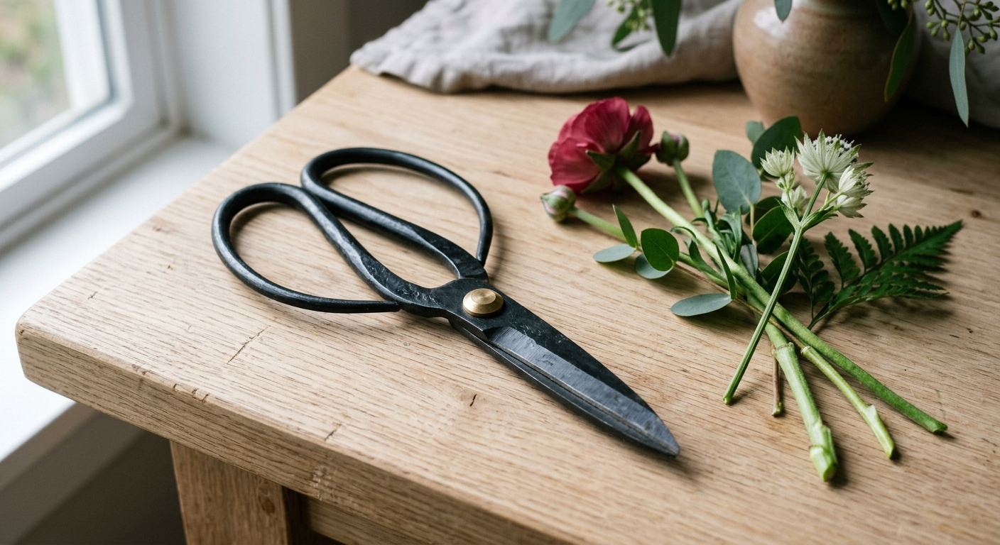

Traditional Japanese kado-basami flower scissors, made in Japan - the looped-handle design florists and ikebana practitioners use to make clean, precise cuts without crushing stems.

Sharp, precise blades protect stem health and water uptake.
The looped handle is made for comfortable, repeated cutting.
Traditional construction, not a mass-market import.
Traditional Japanese flower scissors use a distinctive looped-handle design, different from standard kitchen or craft scissors.
That shape lets practitioners make fast, clean, single-handed cuts - essential when arranging many stems during an ikebana session.
The standard tool for Japanese flower arranging.
Clean cuts help cut flowers last longer in a vase.
A genuinely useful, well-made tool.
Like any steel blade, check the current listing for care and sharpening guidance.
Check the current listing for handedness details.
Check the current listing for exact dimensions.
Traditional made-in-Japan ikebana flower scissors - see current pricing and availability on Amazon.
Check Price on Amazon →